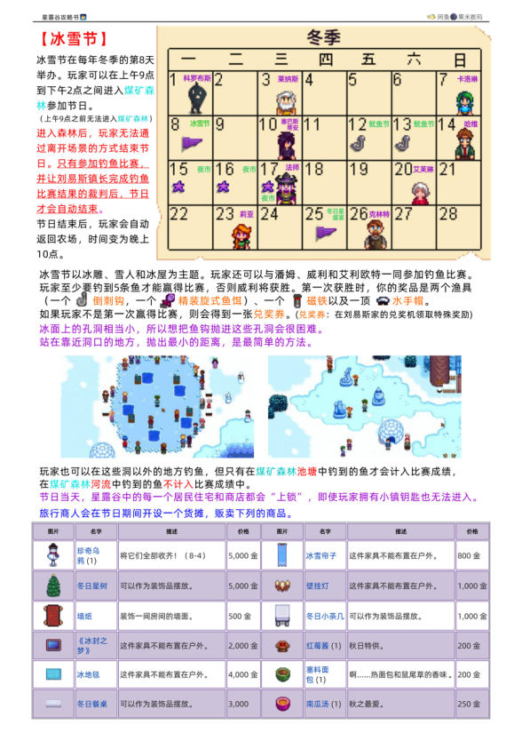
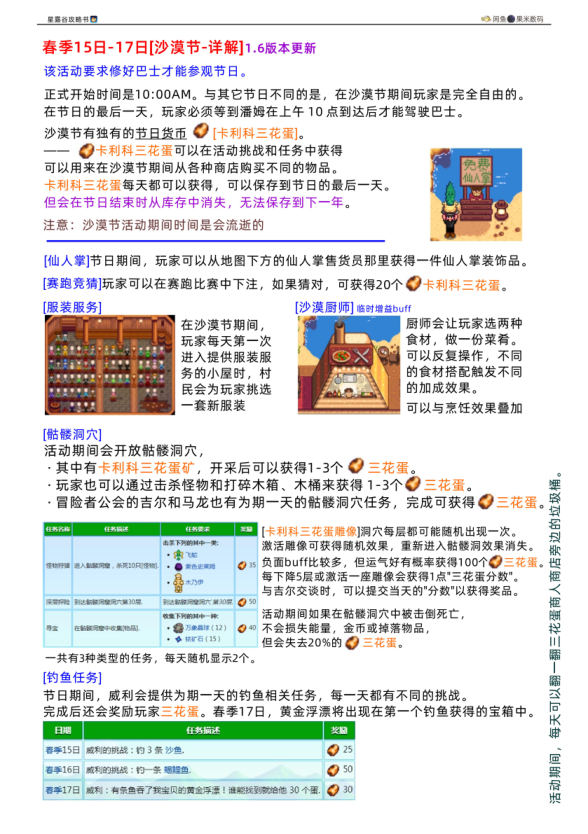

节日与活动
全年节日日历、玩法与奖励，以及 1.6 新增的三个节日和绿雨。

全年节日日历
| 日期 | 节日 | 地点 / 时间 | 核心玩法与奖励 |
|---|---|---|---|
| 春 13 | 蛋蛋节 | 镇广场 9:00–14:00 | 找彩蛋比赛；摊位卖草莓种子与装饰 |
| 春 24 | 花舞节 | 煤矿森林 9:00–14:00 | 与 4 心以上的村民跳舞，提升好感 |
| 夏 11 | 夏威夷宴会 | 海滩 9:00–14:00 | 往汤锅里放食材，结果影响全镇反应 |
| 夏 28 | 月夜水母 | 海滩 22:00–24:00 | 纯观赏，放水母灯，氛围向 |
| 秋 16 | 星露谷展览会 | 镇广场 9:00–15:00 | 农产品评比、转盘、小游戏赚星币；2000 星币换星之果实 |
| 秋 27 | 万灵节 | 镇广场 22:00–23:50 | 南瓜迷宫，终点有稀有奖励 |
| 冬 8 | 冰雪节 | 煤矿森林 9:00–14:00 | 冰钓比赛，赢取渔具与装饰 |
| 冬 15–17 | 夜市 | 海滩 17:00–2:00 | 商人、潜水艇、美人鱼船、稀有鱼与装饰 |
| 冬 25 | 冬星宴 | 镇广场 9:00–14:00 | 秘密礼物交换，提前准备一份好礼物 |
节日当天镇上大部分店铺关闭；节日有固定结束时间，到点会自动结束。所有节日的地图布局与对话每两年变化一次，第二年的摊位位置和路线会不同。
几个不能错过的节日
蛋蛋节（春 13）：草莓种子
摊位出售草莓种子，是春季最高性价比的复收作物。13 日买、14 日种，季末还能收 3–4 次。务必留 2000–4000g 现金，别在节前把钱全花光。
星露谷展览会（秋 16）：星之果实
用星币在兑换处换奖品，2000 星币换星之果实（体力上限 +34）是全游戏最划算的兑换之一。农产品评比拿高分、转盘押绿色都能快速攒星币。
冬星宴（冬 25）：秘密礼物
提前知道自己的交换对象，准备一份「最爱」礼物。送得好会大幅加好感，送垃圾会掉好感。
夜市（冬 15–17）：稀有货
潜水艇可以看海底，商人卖稀有鱼、装饰与种子；美人鱼船有剧情。连续三晚都值得逛。
1.6 新增的三个节日
| 节日 | 日期 / 地点 | 玩法 | 主要奖励 |
|---|---|---|---|
| 沙漠节 | 春 15–17 · 沙漠 | 用「印花蛋」当货币，赛马、小游戏、摊位兑换 | 谜之盒、木乃伊面具、蓝结、超级炸弹、技能书 |
| 鳟鱼大赛 | 夏 20–21 · 煤矿森林河边 | 钓虹鳟收集金标签，交给摊位兑换 | 桶帽、蟹笼、谜之盒、钻石、鳟鱼标本 |
| 鱿鱼节 | 冬 12–13 · 海滩 | 两天内按钓到的鱿鱼数量兑奖，两日档位不同 | 高级鱼饵、珍珠、鱿鱼帽 |
沙漠节需要先修复巴士。印花蛋跨日保留但节末清零，且不能卖钱，记得花完。鳟鱼大赛与鱿鱼节都不影响正常农活，顺路参加即可。
绿雨
夏季随机一天（5、6、7、14、15、16、18、23 日中的一天），全山谷进入绿色雨季。大量树木与杂草刷新，树木可能长出苔藓、橡树与枫树临时变异。当天优先跑森林、农场、山区，用镰刀与斧头集中收苔藓、苔藓种子与纤维——这是蘑菇原木与西兰花种子的关键储备日。
节日通用技巧
- 节前存钱蛋蛋节、展览会、夜市都有值得买的东西，节前别把钱全投进种子。
- 节日不消耗体力可以放心逛，但结束后回家仍要注意时间。
- 带礼物花舞节、冬星宴、夏威夷宴会都能顺便刷好感。
- 看日历日历会标出节日与村民生日，月初先规划。
- 重复夺冠部分比赛可以反复参加，奖励会进入循环奖池。
蛋蛋节买草莓 > 展览会换星之果实 > 冬星宴送好礼 > 夜市补稀有货。其余节日按兴趣参加即可。
节日细节与获胜条件
每个节日的开放时间、开始方式和获胜门槛，卡在这里的人多半是没找对 NPC 或没达标。
| 节日 | 时间 / 地点 | 开始方式与门槛 | 奖励 |
|---|---|---|---|
| 蛋蛋节 | 春 13 · 9:00–14:00 镇广场 | 与刘易斯对话开始；50 秒内捡满 9 个彩蛋，否则阿比盖尔获胜 | 首次夺冠得草帽，之后得兑奖券；摊位可买草莓种子（全年唯一渠道） |
| 花舞节 | 春 24 · 9:00–14:00 森林西部 | 与单身村民对话两次邀请；好感需 4 心以上才会答应 | 跳舞与舞伴 +1 心（250 点好感）；摊位卖季节性装饰 |
| 夏威夷宴会 | 夏 11 · 9:00–14:00 海滩 | 与刘易斯对话开始品尝百乐汤 | 放入的材料决定州长评价，加减全体村民好感；放金星级食材最稳 |
| 月夜水母 | 夏 28 · 22:00–24:00 沙滩码头 | 与刘易斯对话开始观看 | 纯观赏；皮埃尔摊位卖月光水母帘子、云朵贴纸等装饰 |
| 星露谷展览会 | 秋 16 · 9:00–15:00 鹈鹕镇 | 小游戏赚星币；与刘易斯对话参加农庄展览评比 | 2,000 星币换星之果实；展品评比给星币；格斯免费救生汉堡 |
| 万灵节 | 秋 27 · 22:00–23:50 鹈鹕镇 | 走迷宫，路线每年不同（见下） | 奇数年黄金南瓜，偶数年兑奖券；摊位卖南瓜灯、墓石等 |
| 冰雪节 | 冬 8 · 9:00–14:00 煤矿森林 | 参加冰钓比赛，对手是潘姆、威利、艾利欧特 | 第一年钓到 5 条即赢：3 个渔具 + 水手帽；之后为兑奖券 |
| 夜市 | 冬 15–17 · 17:00–2:00 沙滩 | 无需对话，直接逛 | 特色商店、美人鱼表演、深海潜艇；可钓夜市独有鱼 |
| 冬星宴 | 冬 25 · 9:00–14:00 鹈鹕镇 | 神秘礼物交换，无需报名 | 提前一周（冬 18）刘易斯寄信告知你的送礼对象，备好礼物再进场 |
万灵节迷宫怎么走
沙漠节完全攻略

春 15–17 三天，10:00 开始，修好巴士即可参加。货币是卡利科三花蛋，跨日累计但节末清零，不能卖钱（售价 0）。
| 玩法 | 规则 | 收益 |
|---|---|---|
| 赛跑下注 | 每日 10:00 至最后一场开赛前；必须留在节日区域内等结果 | 猜中 +20 三花蛋；押闪电蜗牛每日首胜 +100 |
| 作弊 | 给绿洲旁可疑的家伙 1 个三花蛋，让指定选手更容易输 | 节日未开始或比赛进行中无法操作 |
| 免费仙人掌 | 地图下方仙人掌售货员，背包需留空位 | 每天一件随机仙人掌装饰，每次节日限一个 |
| 艾米丽服装服务 | 每天第一次进入小屋，艾米丽或桑迪为你挑一套 | 共 61 套（中性 34 / 男 13 / 女 14），原服装自动进背包 |
| 厨师 | 选两种食材现做，效果持续 7 分钟，可与料理增益叠加 | 单项 +3（防御/采矿/运气/攻击/钓鱼）或 +1（速度），并回满生命与能量 |
| 学者 | 连答 4 题，全对领奖，每天一次机会 | +50 三花蛋（一个存档只能成功一次） |
| 威利钓鱼任务 | 每日不同的钓鱼挑战 | 奖励三花蛋；春 17 日黄金浮漂出现在第一个钓鱼宝箱 |
| 骷髅洞穴挑战 | 无需头骨钥匙；节日期间洞内有卡利科三花蛋矿 | 每下 5 层或激活雕像 +1 分；20 分换 100 蛋、25 分换 200 蛋、40 分得吉尔帽子 |
| 哈维医疗站 | 洞内昏迷在此苏醒，生命 10，不扣钱不掉物品 | 代价是失去 20% 的三花蛋 |
| 斗篷人 | 付费传送回农场 | 250g，等同传送图腾：农场 |
每天先领免费仙人掌与服装，再去垃圾桶翻 5–8 个三花蛋，然后刷赛跑。最后一天商人处 250 蛋可换魔法糖冰棍、500 蛋换五彩碎片，记得留够。三花蛋节末清零，别攒着。
沙漠节期间骷髅洞穴照常运作，如果开了「危险骷髅洞穴」，这几天会明显变难，进场前先在洞口切换回去；放在沙漠的箱子在节日期间会消失，春 18 日才归还。